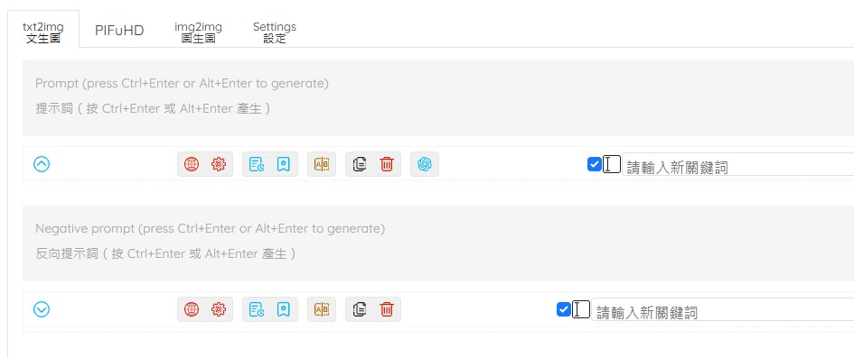
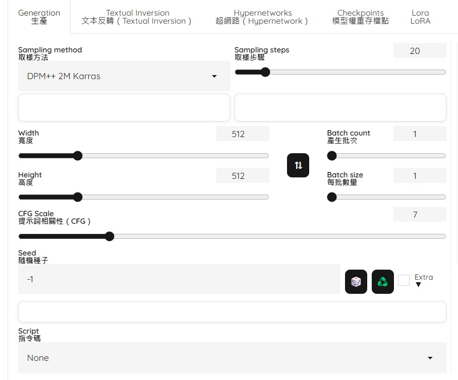
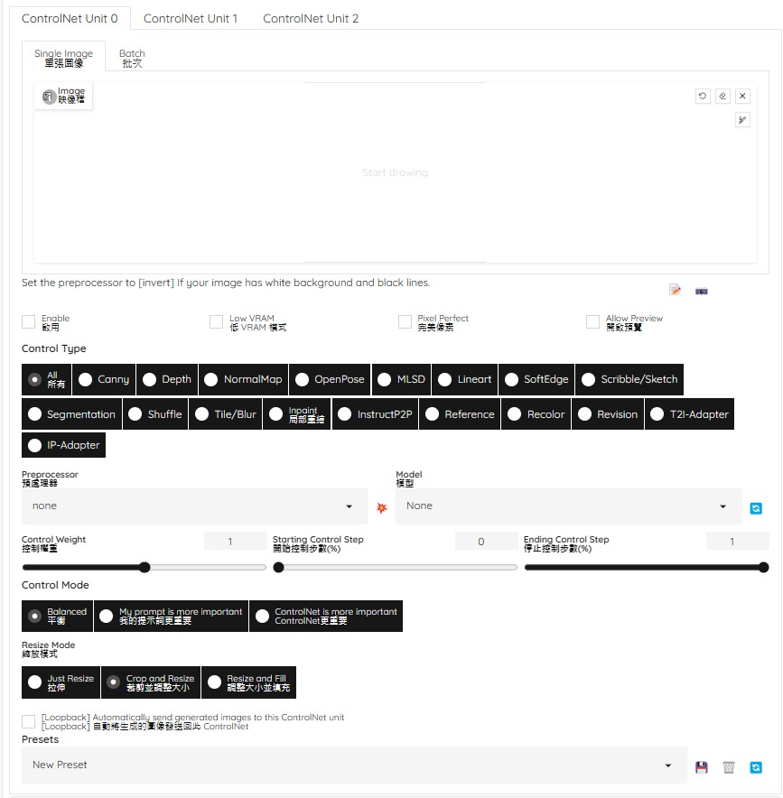

使用參數與步驟

Prompt提示詞
是文字形式的指令，傳達了藝術家所需的圖像規格、細節和風格偏好，輸入到模型（如 Stable Diffusion）中，以產生特定的輸出。
Negative prompt 反提示詞另一種推動AI模型的方法，為您提供您想要的東西，在反提示詞中輸入的東西將不會出現在最後的成品中。

Sampling steps取樣步驟
取樣步驟是指根據文字提示運轉，Stable Diffusion從隨機雜訊到可辨識影像的迭代次數。在每個取樣過程中，Stable Diffusion透過對先前影像進行去雜訊以使其更接近提示詞，從而產生新的取樣影像。
Sampling method取樣方法Stable Diffusion透過稱為「取樣」(Sampling)的去雜訊過程產生影像。在每一步中，它都會透過新增雜訊然後慢慢刪除它來建立新的樣本影像。有不同的取樣方法可以權衡影像品質、訓練時間和 VRAM 使用情況:
Euler a - 高效率但影像品質較低
DPM - 產生更高品質的影像，但需要更多 VRAM 和時間

Control Step控制步驟